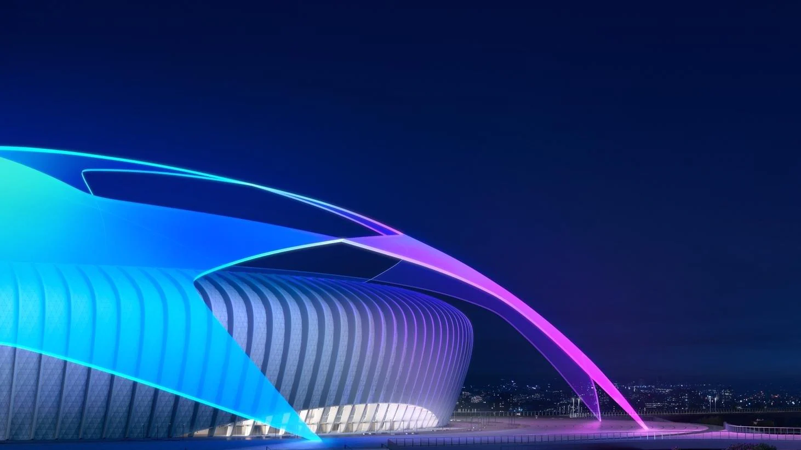

Futbol

16/11/21
 La Champions
Champions League
El futbol es el deporte más popular en el mundo. Millones de personas disfrutan de este hermoso deporte, y de los partidos. En este deporte hay una competición que todos los jugadores ansían con ganar, y que reúne a los mejores equipos de Europa a competir por el trofeo más codiciado: La Champions League. En este torneo es donde han surgido las leyendas de los más grandes equipos, como el glorioso Real Madrid, el poderoso Bayern Munich, entre otros. Igualmente hay grandes jugadores que han forjado su nombre gracias a esta competición, como es el caso de Cristiano Ronaldo, el mejor jugador en la historia de este deporte. Este trofeo es el más codiciado entre los clubes, y desde fase de grupos nos ofrece encuentros apasionantes entre clubes de diferentes países. Conforme avanza el torneo la intensidad se vuelve mayor hasta que un equipo se impone a los demás y se consagra como campeón de la Champions League.
La Champions League es el torneo más prestigiosa a nivel clubes, y el mejor equipo del mundo es obviamente el que más veces ha ganado este torneo. EL Real Madird tiene 13 champions en su haber, casi el doble que su más prócimo perseguidor.
El Real Madird es el equipo más grande del futbol mundial, y en el video se pueden apreciar algunos de sus mejores momentos en la competición más prestigiosa del mundo a nvel clubes, la cual han ganado 13 veces.
-----------------------------------------------------------------------------------------------------------------------
.jpg) Manuel Neuer
Manuel Neuer
Porteros
Una de las posiciones más infravaloradas, pero sin embargo de las más necesarias en este hermoso deporte que es el futbol es la posición de portero. El portero es el guardián de la portería, el jugador que lleva sobre sus hombros el peso de todo el equipo. Es aquel que aparece en el momento más difícil del juego para salvar al equipo. Una parada puede llegar a ser de mucha más importancia que un gol, sin embargo, lamentablemente mucha gente no ve esto y en su logar solo se fijan en el portero cuando este cometió un error que costó al equipo el partido. Los porteros se encuentran sumamente infravalorados, pero aún así existen varios portero que han logrado grabar sus nombres en los libros de historia como algunos de los mejores jugadores que ha visto este bello deporte.
Ser portero es algo muy difícil, ya que requiere de una gran habilidad, excelentes reflejos y valor para lanzarte tras un balón y evitar la caída de tu portería.
En este video podemos ver paradas asombrosas realizadas por algunos de los mejores porteros del mundo y de la historia.
-----------------------------------------------------------------------------------------------------------------------
.jpg) El Bicho
El Bicho
Delanteros
Si piensas en jugadores de futbol lo primero que te llega a la mente es el goleador del equipo, aquel jugador capaz de por su cuenta destrozar al equipo rival y anotar un gol que de la victoria a su equipo. Este jugador es el delantero. Los delanteros muy a menudo son los jugadores más reconocidos en este deporte, y hay razones más que suficientes para esto. Son quienes acaban las jugadas, dando el grito de gol que es capaz de levantar a un estadio entero a que coreen su nombre. Los más grandes jugadores que este deporte ha visto son en su mayoría delanteros, de entre los cuales cabe mencionar al G.O.A.T., el mejor jugador de la historia, Cristiano Ronaldo.
Ser delantero requiere de mucha habilidad, y los delanteros son quienes marcan la mayoría de los goles de los equipos, haciéndolos los jugadores que más famosos se vuelven.
El video trata sobre el mejor delantero de todos los tiempos, el más asombroso jugador de futbol que haya vivido nunca, Cristiano Ronaldo. Se pueden ver sus mejores momentos como futbolista.